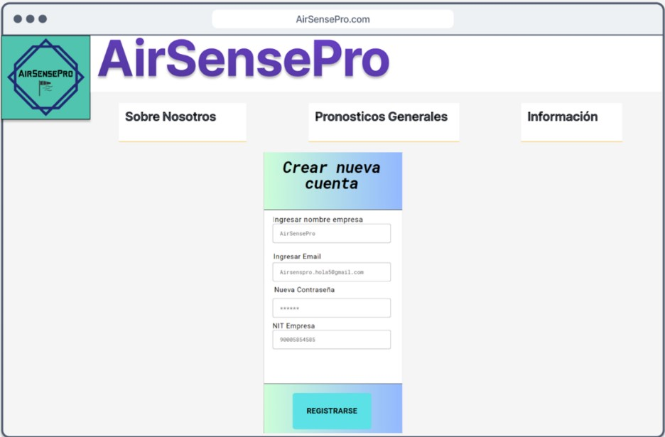
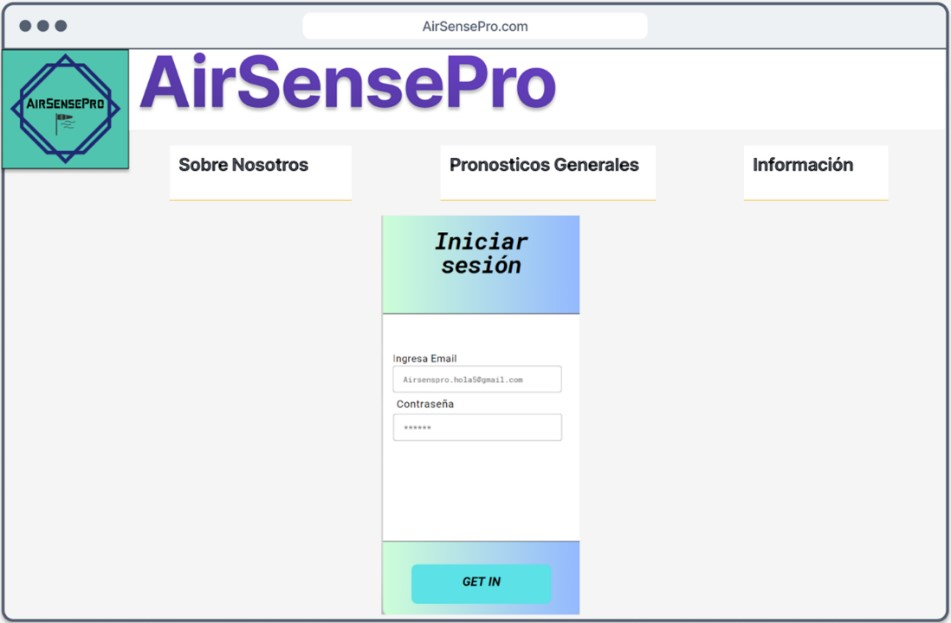
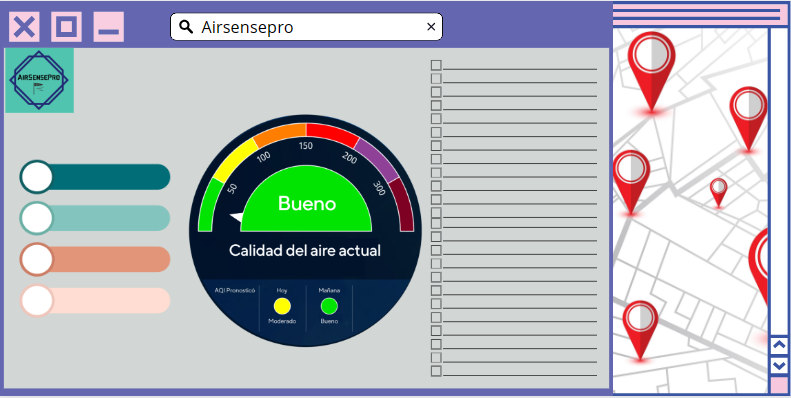

Desarrollar una plataforma web que brinde a los usuarios información en tiempo real sobre agentes contaminantes del aire e información meteorológica en la ciudad de Bogotá, utilizando la ubicación del usuario para focalizar la información de manera precisa.
❖ 1. Semestre: ⮚ Identificar los diferentes agentes contaminantes en el aire que causan mayor repercusión en la salud de las personas mediante una búsqueda documental. ⮚ Realizar una búsqueda de antecedentes con el fin de fundamentar la información respecto a plataformas web de medición y monitoreo del aire que existen.
❖ 2. Semestre: ⮚ Realizar y socializar una encuesta para la comunidad San bonaventuriana sobre el conocimiento e interés respecto a la calidad del aire en Bogotá. ⮚ Crear un MockUp inicial del diseño pensado para la plataforma web del proyecto.
❖ 3. Semestre: ⮚ Crear las conexiones para la interacción entre frontend y backend de manera parcial mediante el uso de bases de datos y la plataforma web. ⮚ Realizar las vistas para mostrar la información en la plataforma web mediante el uso de mockups.
❖ 4. Semestre: ⮚ Ajustar el enfoque del Proyecto. ⮚ Crear las conexiones para la interacción entre frontend y backend de manera parcial mediante el uso de bases de datos y la plataforma web. ⮚ Realizar más vistas para mostrar la información en la plataforma web mediante el uso de mockups.
La ciudad de Bogotá enfrenta graves problemas de contaminación atmosférica, especialmente en términos de concentraciones de material particulado PM2.5 y PM10, óxidos de nitrógeno y dióxido de azufre, que superan en muchos casos los límites establecidos por la Organización Mundial de la Salud (OMS) y la normativa nacional. Estas altas concentraciones de contaminantes atmosféricos tienen un impacto directo en la salud de la población, aumentando el riesgo de enfermedades respiratorias, cardiovasculares y cáncer, además de afectar negativamente el medio ambiente.
Además, la ciudad de Bogotá es conocida por su variabilidad climática, con cambios repentinos en las condiciones meteorológicas que pueden influir en la dispersión de contaminantes y en la calidad del aire. Por lo tanto, es importante contar con información actualizada y en tiempo real sobre la calidad del aire y las condiciones meteorológicas en diferentes zonas de la ciudad para poder tomar medidas preventivas y de mitigación adecuadas (Secretaría de Ambiente, 2020).
En este contexto, el desarrollo de una plataforma web que permita acceder a información de agentes contaminantes del aire e información meteorológica en tiempo real, utilizando APIs según la ubicación del usuario en Bogotá, se presenta como una solución innovadora y eficaz para concientizar a la población sobre la importancia de la calidad del aire y promover hábitos y comportamientos más sostenibles y saludables. Además, esta plataforma podría ser de utilidad para instituciones públicas y privadas, así como para investigadores y tomadores de decisiones, en la implementación de políticas y estrategias para mejorar la calidad del aire en la ciudad.
¿Cómo monitorear los agentes contaminantes a través de una plataforma web?
  